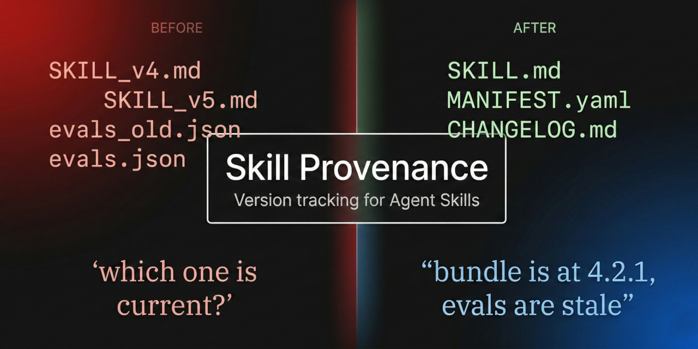

Skill Provenance
Version identity and integrity verification for Agent Skills.
Agent Skills move between sessions, surfaces, and platforms. Filename suffixes break. Git tags require repo access. Version identity gets lost at every boundary. This skill keeps it inside the bundle where it belongs.

Before
SKILL_v4.md SKILL_v5.md evals_old.json evals.json "which one is current?"
After
SKILL.md MANIFEST.yaml CHANGELOG.md "bundle is at 4.8.0, evals are stale"
Version Identity
Semver bundle versions and per-file revision counters live inside the files and manifest, not in filenames.
Staleness Detection
When SKILL.md changes but evals.json doesn't, the changelog says so. Drift becomes visible, not silent.
Hash Verification
SHA-256 hashes in the manifest let any session verify that files match their recorded state.